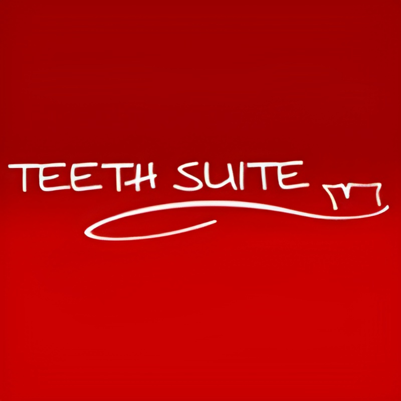

At Teeth Suite Dental Surgery, we offer a range of services to help you achieve and maintain a healthy, confident smile in a relaxed and welcoming environment. Using modern techniques and a patient-first approach, we focus on delivering gentle, reliable care that supports your long-term oral health and overall wellbeing.
Please follow the links on our services page to discover more about the services we offer.
Extractions
Why get an extraction?
On a week to week basis we see many people who come to our surgery just to have a single tooth extracted. At teeth Suite Dental Surgery we do have a special interest in oral surgery and find it a challenging and rewarding procedure to undertake. We do strive to satisfy your wishes however it is very important to understand that it is an irreversible procedure, sometimes, with future complications. It is important that this is discussed and fully understood prior to commencement of the procedure. Dentists strive to preserve teeth because they function better than artificial teeth. Quite often it costs more to replace a lost tooth than to keep it in the first place!
X-rays
An x-ray (radiograph) is always taken prior to the procedure to ascertain why the tooth needs extraction and how this procedure is best performed. In the case of wisdom teeth we frequently refer to various radiology centres for a specific radiograph to help plan the procedure (these are frequently bulk billed or heavily subsidised by Medicare). We shall discuss this at your initial visit and choose a centre close to your home. In the case of emergencies the procedure can be fast tracked to provide a successful outcome on the day.
Anaesthetics
There are many options for anaesthesia when it comes to extractions.
Local anaesthetic:
There exist many different local anaesthetics (injections) with differing effects.
Conscious sedation:
We offer happy gas which is used in conjunction with local anaesthetic. This is perfect for the anxious patient, for children, or for those who would just like to try it. You are conscious during the whole procedure and can cooperate with the dentist. We sometimes premedicate with certain drugs to help cope with the trepidation that comes with the extraction of a tooth.
General Anaesthetic:
Occasionally we go to hospital for a full General Anaesthetic. You are fully unconscious for this procedure, and although an incredibly common procedure in this day and age it does have some risks and side effects which need to be fully discussed and understood. Removal of a tooth is a personal decision that needs to be made after careful consideration and discussion with the dentist. It is important to fully consider what your options are and what the side effects will be prior to the extraction.
Side effects and possible complications include:
- Drifting movement of the adjacent and opposing teeth
- Loss of biting efficiency.
- Exposure of sensitive surfaces of surrounding teeth.
- Shrinkage of the gum in the affected tooth socket.
- Increased biting load on surrounding teeth (leading to mobility, cracking or pain).
- Bleeding (uncommon, although usually stopped by applying pressure with a gauze pad).
- Dry Socket. Caused when the blood clot fails to successfully bind within the extraction socket.
- Infection
- Altered nerve sensation (caused when the nerve is bruised or injured during the extraction procedure)
- Costs of replacing the tooth!